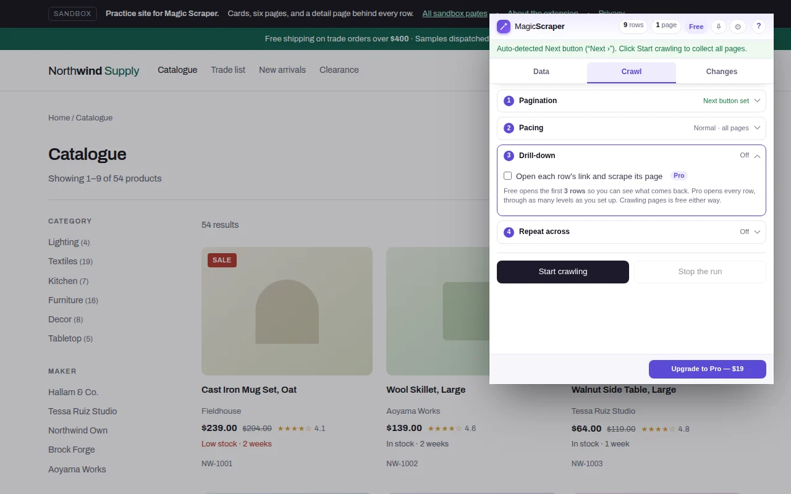

Guide
A web scraper with no meter running.
Credits that run out halfway through a list. A free trial that becomes a charge on day one. A cancel button you can't find. Those are the most common complaints in scraper reviews, and none of them is about scraping. Here is how Magic Scraper is priced instead, and what to ask any tool before you pay.
What you get without paying
Install it and it works: no account, no email, no card. The free version has no clock on it and no monthly allowance. It finds tables, lists and card grids, lets you pick rows by hand, crawls every page of a paginated list, and exports CSV, Excel or JSON as often as you like. Nothing is counted, so nothing runs out.
| Free | Pro, $25 once | |
|---|---|---|
| Find tables and lists, pick by hand | Yes | Yes |
| Crawl every page: Next, page numbers, infinite scroll, Load more | Unlimited | Unlimited |
| Export CSV, XLSX, JSON or copy | Unlimited | Unlimited |
| Recover a run whose tab closed | Yes | Yes |
| Open the page behind each row | First 3 rows of a run | Every row, up to 10 levels |
| One setup over a list of addresses | First 2 addresses | Every address |
| Named setups, compare runs, compare with a file, schedules | No | Yes |
| Account, credits or monthly fee | None | None |
The two limits on the free side are stated here, and on the drill-down and list controls in the extension before a run starts, so nobody finds them at the end of a job.

Why credits feel like a trap
Credit-based scrapers charge per page loaded, per row returned or per AI action. That can be fair, but it makes the cost of a job unknowable until it's done. Reviewers keep describing the same three surprises: credits spent on a run that failed, credits spent on pages they didn't select, and a feature that costs thousands of credits on a plan that comes with a hundred.
Magic Scraper runs in your browser, on your computer, so there is no server time to bill for. A failed run costs nothing but the minute you spent on it, and a 10,000-row list costs the same as a 10-row one.
What "pay once" means here
Pro is a licence key from Gumroad: $25, one time ($19 for the first 100 buyers). It never renews, so there is nothing to cancel. Every update since carries across, so there is no second purchase for a new version. If it isn't what you needed, ask for a refund within seven days.
Try before paying: drill-down runs on the first three rows of any run for free, so you see exactly which fields come back from the site you care about before you spend anything.
Five questions to ask any scraper before you pay
Does the trial turn into a charge?
If a card is needed for a free trial, find out the date and amount it bills, and whether it's monthly or a year up front.
What counts as a credit?
A page, a row, a subpage, an AI call? Is a failed or blocked page charged?
Where do I cancel?
Look for the cancel button before you subscribe, not after. In-app cancellation is the sign of a fair plan.
What is the refund policy?
"Non-refundable" is common. A stated refund window is worth more than a long trial.
What happens to my data?
Is it scraped on their servers, stored in their cloud, sent to an AI model? See how to check.
Reasonable questions
Is there a web scraper with no subscription?
Yes. Magic Scraper's free version has no time limit and no account, and its Pro licence is a one-time $25 payment that never renews. There are no credits on either.
Is the free version a trial?
No. It has no clock and no monthly allowance. Detection, unlimited pagination and export stay free. Pro adds drill-down on every row, lists of addresses beyond two, saved setups, comparisons and schedules.
Do I need a credit card or an account?
No. Install it from the Chrome Web Store or Edge Add-ons and use it. A card is only involved if you choose to buy Pro on Gumroad.
What happens if a run fails?
Nothing is charged, because nothing is metered. If the tab closes during a crawl, the rows collected so far can be brought back the next time you open the extension on that site, free.
Can I get a refund?
Yes, within seven days of buying Pro, with no questions asked.
Does Pro include future updates?
Yes. Updates arrive through the Chrome Web Store or Edge Add-ons, and a Pro licence keeps working across them.